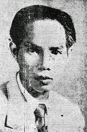
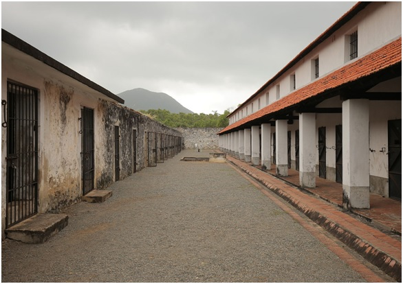

NHỮNG MẨU ĐỜI
Phan Văn Hùm

Phan Văn Hùm (1902-1945)
Sinh ngày 9 tháng 4 năm 1902 tại An Thạnh (Thủ Dầu Một), con nhà tiểu chủ trí thức theo Đạo Phật, đỗ sơ học năm 1922 và tốt nghiệp Trường Chasseloup Laubat (Sài Gòn). Khởi dạy học ở Sóc Trăng năm 1923. Sau đó anh được nhận vào Trường Công Chính Hà Nội năm 1924, tốt nghiệp năm 1925, anh làm Đốc Công Trường Tiền từ 1926 đến 1928. Ở Huế, nữ học sinh Trường Đồng Khánh bãi khóa nhân vụ đám tang Phan Chu Trinh, anh về Trường Tiền, Tệ bạn anh, đem họ về trọ trong nhà. Bà Trần Thị Như Mân, bạn đời Đào Duy Anh, nhắc nhở sự nầy trong quyển Sống với tình thương. Vì lai vãng viếng thăm nhà cách mạng lão thành Phan Bội Châu, lúc đó đang bị giam lỏng ở Huế, anh bị buộc phải thôi việc và phải bồi thường phí tổn học tập.
Về Sài Gòn, anh trở thành người bạn và môn đệ của Nguyễn An Ninh, cùng với Ninh, đi xe đạp khắp miền quê để ‘’thức tỉnh’’ nông dân. Bị vào tù lần đầu sau cuộc ẩu đả với tên lính vệ là Cai Nên ở Bến Lức hồi cuối tháng 9 năm 1928. Sau khi ra tù, anh viết quyển Ngồi Tù Khám Lớn, tố cáo chế độ nhà tù tàn tệ và phô bày những phương pháp tra tấn dã man của mật thám và lên tiếng bảo vệ Nguyễn An Ninh bị ghép vào tội hội kín. Sách được giới thanh niên rất hâm mộ liền bị cấm.
Xã hội này nay lắm bất bình,
Kêu sao cho thấu, hỡi Trời xanh?
Xây lầu mà ở chòi tranh nát,
Dệt lụa lại không mảnh áo lành,
Kẻ trí lường công người dốt nát,
Đứa ngu thêm sức bọn khôn lanh.
Chừng nào thiên hạ hay mình khổ,
Muôn việc lôi thôi tức khắc thành.
Đấy là một trong trong những vần thơ Phan Văn Hùm thời kỳ đó.
Tháng 7.1929, tòa kết án anh 4 tháng tù treo, qua mùng 3 tháng 9 anh đáp tàu sang Pháp. Một bầu thế giới mênh mông, Dành riêng cho kẻ bềnh bồng phiêu lưu. Phải chăng hai câu thơ của Nguyễn An Ninh đã khêu gợi lòng anh ra đi lưu lạc bốn năm trên đất Pháp.
Tại Toulouse, anh có mặt trong Ủy ban sinh viên An Nam đấu tranh chống đàn áp cuộc khởi nghĩa Yên Bái tháng 2 năm 1930. Anh lên Paris tham dự cuộc biểu tình ngày 22 tháng 5 trước Điện Elysée. Anh trốn thoát cảnh sát lùng bắt, chạy sang Belgique-Bỉ. Bên ấy, cùng Hồ Hữu Tường chuẩn bị ra một số tờ báo. Báo Tiến Quân ra được một số duy nhất phát biểu công việc chuẩn bị cho cuộc đại hội lâm thời những người cách mạng An Nam xuất dương. Tiêu đề tờ báo: Không có lý luận cách mạng, không có phong trào cách mạng (Lenin).
Trở lại Paris vào tháng 7, anh ngả theo tư tưởng của phái cộng sản cánh Tả Đối Lập và gia nhập Nhóm người Đông Dương của Liên Minh cộng sản. Nguyên là giáo viên tiếng Việt tại Trường Trung Học Toulouse, anh bị đuổi vì tuyên truyền chủ nghĩa quốc gia. Sau đó anh lại trở lên Paris ghi danh học cử nhân triết học tại Đại Học Sorbonne, đồng thời vẫn không bỏ những hoạt động đấu tranh (cuối năm 1930 đến 1933); anh tham gia vào phân ban Pháp của Liên minh phản đế và công tác trong Ủy ban đòi ân xá cho người Đông Dương.
Trở về Sài Gòn tháng 7.1933, anh gặp lại Tạ Thu Thâu và Hồ Hữu Tường, làm Chủ Bút tạp chí văn học Đồng Nai, tờ nầy bị cấm đầu năm 1934. Anh dạy tiếng Việt và giảng văn học tại Trường Trung Học Paul Doumer. Giữa 1935 anh bị đuổi khỏi trường vì đã tổ chức thầy giáo bãi khóa.
Anh tham gia vào mặt trận hiệp nhất La Lutte. Sau khi mặt trận tan vỡ năm 1937, anh tiếp tục với Tạ Thu Thâu viết bài trên báo Tranh Đấu-La Lutte, trở thành cơ quan của Đệ Tứ Quốc Tế.
Được bầu vào Hội Đồng Quản Hạt Nam Kỳ tháng 4 năm 1939, qua cuối tháng 6 anh bị bắt rồi bị kêu án 5 năm tù và 10 năm biệt xứ ngày 15 tháng 10, về việc cổ động phản đối công trái và đảm phụ quốc phòng. (Theo thường lệ, đối với tù chính trị bị kết án tù từ 3 năm trở lên sẽ bị đưa ra Côn Đảo).
Mãn tù, bị phù thũng từ trong ngục, anh bị quản thúc tại Tân Uyên (Biên Hòa). Sau cuộc Nhật đảo chính anh xuống Sài Gòn và được Bác Sĩ Hồ Tá Khanh chữa chạy. Anh hoạt động cùng anh em trong nhóm Tranh Đấu, giữa các biến cố tháng 8 năm 1945.
Hồ chí Minh phái người vào Nam hạ bệ Trần văn Giàu, cải tổ ủy ban hành chánh lâm thời Nam Bộ, phong Trạng Sư Phạm văn Bạch chủ tịch chính quyền Việt Minh. Hội nghị mở rộng ủy ban nhân dân Nam Bộ, mời các xu hướng chính trị khác tham gia. Ngày 10 tháng 9 năm 1945, nghe đâu người ta dự kiến mời Phan Văn Hùm nhưng anh từ chối.
Giữa phong trào chống quân Pháp tái chiếm thuộc địa, Dương bạch Mai bắt giam Phan Văn Hùm tại vùng Biên Hòa vào tháng 10 năm 1945. Anh cùng một số tù chính trị khác toàn là người An Nam đều bị giết tại Sông Lòng Son (trên đường xe lửa chặng giữa Ga Phan Thiết và Tour Cham), thi thể xô xuống sông.
Buổi tối trước khi dời đi khỏi Biên Hòa, anh đối khẩu cuối cùng với Dương bạch Mai (cả hai đều có chân trong nhóm La Lutte và đồng bị đày ra Côn Đảo năm 1940). Mai nói: ‘’Ở Côn Sơn, tôi biết anh đã từng đưa lưng cho ngục tốt đánh để che chở kẻ khác, nhưng bấy giờ là cách mạng...’’. Hùm trả lời: ‘’Nếu anh muốn giết tôi thì cứ giết ngay tại đây, cần gì phải dời đi chỗ khác làm gì?’’
Theo một môn đệ của Stalin như Dương bạch Mai, cần phải thủ tiêu mất tích tác giả quyển Ngồi Tù Khám Lớn, nhà văn cách mạng đã kích thích thanh niên đột khởi một thời. Chuyện trên đây là do một người đồng bị giam với Phan Văn Hùm được sống sót, Thầy Giáo Trương Minh Hải, người gốc ở Cù Lao Phố, thuật lại cho Trần Ngươn Phiêu hiện làm y sĩ ở Texas.
Tác phẩm chính: Ngồi Tù Khám Lớn, Sài Gòn 1929; Dương Linh, Mấy Đường Tơ (tập thơ); Sa đà du tử (Nhật ký, cảm tưởng về du hành và sống ở Pháp) Đăng báo Thần Chung; Biện chứng pháp phổ thông, Sài Gòn 1936; Nguyễn Phi Hoanh, Tolstoi, Sài Gòn 1939; Phật giáo triết học Hà Nội 1942; Vương Dương Minh, Thân thế và học thuyết, Hà Nội 1944.
~~~oOo~~~

Tạ Thu Thâu
(1906-1945)
Ngày 20 tháng 5 năm 1939, ba tháng rưỡi trước khi nổ ra cuộc chiến tranh, Toàn Quyền Đông Dương Jules Brévié đã dành tới bốn trang điện báo gởi cho Bộ Trưởng Thuộc Địa Georges Mandel để báo cáo về Tạ Thu Thâu. Y so sánh thái độ Nguyễn Văn Tạo, người cộng sản thuộc phái Stalin ‘’có thái độ trung thành với nước Pháp trong trường hợp có chiến tranh, thái độ phù hợp với đảng cộng sản Pháp’’, trong khi đó những người cộng sản xu hướng trotskiste, dưới sự lãnh đạo của Tạ Thu Thâu’’ dự kiến ‘’lợi dụng cơ hội chiến tranh có thể xảy ra để giải phóng hoàn toàn xứ sở’’ và ‘’một khi Tạ Thu Thâu được tha thì hắn sẽ tiếp tục khuấy động phong trào gây ly tán về đạo đức, chính trị và kinh tế’’.
Tạ Thu Thâu bị hao mòn sức lực thanh niên trong bàn tay bọn cai ngục Pháp. Khi ra tù vào tháng 2.1939 anh hầu như bị tê liệt. Sau bốn năm trong Bagne de Poulo Condor Côn Sơn, rồi mười tháng sau khi ra khỏi ngục, thủ hạ Hồ chí Minh hạ sát anh ở Quảng Ngãi năm 1945.

Nhà tù Côn Đảo
Mẹ anh mất vì bị lao khi anh 11 tuổi; anh giúp cha để nuôi 6 miệng ăn. Học hết lớp ba, anh phải làm lon-ton ở Sở Trường Tiền, cuối lớp nhì, đi dạy học cho trẻ con trong gia đình một hương chức để kiếm 5 đồng bạc. Năm 14 tuổi thi đỗ vào Trường Trung Học Chasseloup Laubat; năm 17 tuổi được cấp học bổng. Chính trong bầu không khí giới thanh niên học sinh hướng về tinh thần quốc gia sôi sục khắp nơi, anh tốt nghiệp trung học. Về sau, anh thuật lại:
Chúng tôi sống những ngày nặng nề đầy lo âu về mặt trí thức trong một bầu không khí rừng rực vì sự căng thẳng cùng cực cứ mỗi lúc một tăng giữa chính quyền và người dân bản xứ. Trong giờ học chúng tôi lén đọc báo cấm, giờ chơi chúng tôi họp kín. Chúng tôi chỉ có hai tư tưởng: Ám sát cá nhân và lập một đạo binh ở bên Tầu để giành lại nền độc lập nước nhà.
Đầu năm 1926, lực lượng của chúng tôi tụ tập lại thành Đảng Jeune Annam (Annam Trẻ).
Đám tang Phan Chu Trinh hồi tháng tư 1926, Tạ Thu Thâu cùng đồng chí diễu hành dưới tấm biểu ngữ ‘’Cách mạng An Nam muôn năm!’’, và vụ bắt giam Nguyễn An Ninh, - nhà cách mạng vô chính phủ-lãng mạn - đã khởi phát một phong trào học trò bãi khóa, rời bỏ nhà trường, nhân viên nhà băng Đông Dương cùng thợ Sở Ba Son (xưởng Thủy Binh) bãi công cũng như phong trào thanh niên sang Pháp du học.
Năm 21 tuổi, Thâu ở Paris, nhập ban khoa học trường đại học. Thoạt đầu anh hoạt động trong Đảng An Nam Độc Lập (PAI-Parti Annamite de l'Indépendance) rồi anh cầm đầu nhóm nầy sau khi Nguyễn Thế Truyền, người sáng lập đảng trở về Sài Gòn năm 1926. Đồng thời cùng Huỳnh Văn Phương viết báo La Résurrection (Phục Hưng), một tờ báo ra hàng tháng, nhưng bị tịch thu ngay khi phát hành.
Vào tháng giêng năm 1929, tiếp sau một cuộc đụng độ giữa nhóm ‘’Thanh Niên Yêu Nước’’ (cực hữu) của Taittinger với những người Việt chịu ảnh hưởng Đảng PAI-Parti Annamite de l'Indépendance, Tạ Thu Thâu lên tiếng phản đối báo Nhân Đạo (Humanité ), cơ quan đảng cộng sản Pháp vì trong bài tường thuật báo nầy có ác ý, anh phản đối vì thái độ bất can thiệp đối với những người Việt bị bắt trong buổi họp đó và phản đối luôn’’ bọn lãnh lương ở phân ban thuộc địa của Đảng cộng sản Pháp’’ - ám chỉ những người Việt trong phân ban thuộc địa của Đảng cộng sản Pháp do Nguyễn Văn Tạo cầm đầu - đã hành động chia rẽ hàng ngũ đảng PAI. Tờ truyền đơn của anh kết thúc như sau: ‘’Trong tình cảnh nô lệ thái quá của chúng tôi, chúng tôi kêu gọi những người bị áp bức trên các thuộc địa: Hãy đoàn kết lại chống chủ nghĩa đế quốc Âu Châu dù trắng hay đỏ, nếu các bạn muốn có một chỗ đứng vững dưới ánh mặt trời.’’ (Chú ý: Thâu chỉ sử dụng từ chủ nghĩa đế quốc theo nghĩa chính trị, chứ không theo nghĩa chủ nghĩa đế quốc tư bản, giai đoạn cuối cùng của tư bản chủ nghĩa như Lenin định nghĩa). Tháng 3 năm 1929, anh bảo vệ đảng PAI trước tòa án Quận Seine, nhưng thất bại; tòa án công bố giải tán đảng PAI.
Từ ngày 20 đến 30 tháng 7 năm 1929, anh tham dự đại hội lần 2 của Liên minh chống đế quốc họp tại Frankfurt (xứ Đức). Tại Paris anh gặp gỡ các nhân vật tả phái như Felicien Challey, Francis Jourdain, Daniel Guérin cùng Alfred Rosmer, người đã giới thiệu anh vào Tả Đối Lập Pháp (xu hướng Trotskyist).
Sau cuộc khởi nghĩa Yên Bái (tháng 2 năm 1930) Tạ Thu Thâu phân tích nguyên nhân phong trào quốc gia thất bại. Rồi viết một loạt bài trong Báo Sự Thật (La Vérité), cơ quan của phái Tả Đối Lập (tháng 4, 5 và 6 năm 1930) trình bầy tư tưởng chính trị của mình đối với cuộc cách mạng ở Đông Dương.
Đối với anh sự lưỡng phân không còn là độc lập hay nô lệ, mà là chủ nghĩa quốc gia hay chủ nghĩa xã hội, nghĩa là để cho giai cấp tiểu tư sản trí thức nắm quyền hay là giải phóng cho giai cấp vô sản và nông dân nghèo.
Kế đến sinh viên, lao động An Nam biểu tình trước Điện Elysée (Paris) ngày 22 tháng 5 năm 1930 để phản đối những án tử hình sau cuộc khởi nghĩa Yên Bái. Tạ Thu Thâu bị bắt cùng 18 đồng bào trẻ tuổi rồi bị tống xuống tàu trục xuất khỏi nước Pháp ngày 30 tháng 5. Về tới Sài Gòn ngày 24 tháng 6, Thâu và các bạn được phái Stalin đón tiếp bằng vô số truyền đơn vu khống là những người phản cách mạng.
Để sống, Thâu đi dạy học tại các trường tư, nhưng thường mất việc vì mật thám can thiệp. Vợ anh là Nguyễn Thị Ánh phải buôn bán chiếu để nuôi gia đình.
Phong trào nông dân 1930-1931 thất bại nặng nề, đồng chí trong hàng ngũ đảng cộng sản Đông Dương ở Nghệ An cùng Nam Kỳ xem ra xem xét phê phán Quốc Tế Cộng Sản đã chỉ thị phiêu lưu, kết liễu đảng bị thủ tiêu, vô số nông dân bị tàn sát vô triển vọng.
Tạ Thu Thâu, Phan Văn Chánh và Huỳnh Văn Phương thỏa thuận với Hồ Hữu Tường cùng Đào Hưng Long, thành lập nhóm cộng sản Tả Đối Lập vào tháng 11 năm 1931.
Tháng 4 năm 1932, nhóm Tả Đối Lập phân liệt sau cuộc tranh luận nên hay không nên gia nhập vào đảng cộng sản Đông Dương. Tạ Thu Thâu phát hành tờ báo chiến đấu Vô Sản. Anh bị bắt ngày 6 tháng 8 năm 1932 rồi qua cuối tháng giêng 1933 được tại ngoại hầu tra.
Ra tù, anh tham gia nhóm La Lutte (Tranh Đấu).
Nhóm nầy thành lập do Nguyễn An Ninh sáng kiến, nhóm tham dự cuộc tuyển cử Hội Đồng Thành Phố Sài Gòn cuối tháng tư 1933. Đấy là cuộc hiệp nhất đầu tiên giữa đám chiến sĩ ‘’công khai’’ chiến đấu chống chế độ thực dân, gồm cộng sản xu hướng Trotskyist (Tạ Thu Thâu, Huỳnh Văn Phương, Phan Văn Chánh), xu hướng Stalin (Nguyễn Văn Tạo), hoặc quốc gia dân tộc chủ nghĩa (Trần Văn Thạch, Lê Văn Thử)...tất cả đều xem Ninh như một người đàn anh.
Họ đưa ra một Sổ Lao Động tranh cử, phát hành tờ La Lutte ngày 24 tháng 4 năm 1933 làm cơ quan công bố chương trình binh vực thợ thuyền, nông dân, tiểu thương. Tạ Thu Thâu viết báo La Lutte cùng đứng ra ăn nói trên diễn đàn trong các cuộc hội họp. Hai người đắc cử Nguyễn Văn Tạo và Trần Văn Thạch xáo động Hội Đồng Thành Phố một thời, ba tháng sau thì bị hủy chức.
Tờ báo thôi xuất bản sau cuộc tuyển cử. Tạ Thu Thâu tổ chức những cuộc nói chuyện về lý luận biện chứng pháp trước đông đảo học sinh, thơ ký cùng thợ thuyền tại Nhà Hội Khuyến Học (Maison d'enseignement mutuel), viết bài trong tờ Đồng Nai, tạp chí văn học có xu hướng xã hội do Phan Văn Hùm chủ trương, và dịch sang Quốc Ngữ cuốn Principes élémentaires de philosophie (Những nguyên lý cơ bản của triết học) của Politzer.
Qua năm sau, mặt trận liên kết thứ hai thành lập lại do Nguyễn An Ninh và Péri Gabriel, đảng viên đảng cộng sản Pháp chủ động: Báo La Lutte tái bản ngày 4 tháng 10.1934. Các đồng chí xu hướng Trotskyist sẽ không dùng tờ báo để chỉ trích Liên Sô cùng những người phái Stalin, còn những người phái Stalin sẽ thôi chỉ trích xu hướng Trotskyist. Với tờ La Lutte họ chuẩn bị tuyên truyền trong cuộc tuyển cử tháng 3 năm 1935 vào Hội Đồng Quản Hạt, nhưng tranh cử không thành công. Qua tháng 5, Tạ Thu Thâu, cùng bạn là Trần Văn Thạch với hai người phái Stalin là Dương bạch Mai và Nguyễn Văn Tạo được đắc cử vào Hội Đồng Thành Phố Sài Gòn, chuyện nầy cũng như chuyện trước, họ cũng sẽ bị hủy chức sau một thời gian hoạt động bênh vực dân nghèo đề kháng bọn hội đồng tư sản và thực dân Pháp.
Bị truy tố về ‘’hoạt động gây lật đổ chính phủ bằng con đường báo chí’’, ngày 27 tháng 6 Thâu bị kết án treo hai năm tù; sau đó anh bị bắt giam ngày 26 tháng chạp, vì ủng hộ phu đánh xe thổ mộ đình công, nhưng hôm sau được thả. Ngày 18 tháng 3, báo La Lutte ra tòa lần thứ nhất, Thâu bị xử nộp phạt 500 Franc.
Giữa năm 1936, chính phủ Mặt Trận Bình Dân thành lập ở Pháp. Phong trào thợ thuyền Pháp đình công chiếm xưởng nổ ra lan rộng, chấn động tới Đông Dương.
Nhóm La Lutte cùng các lãnh tụ lập hiến chuẩn bị triệu tập Đông Dương đại hội, một thứ Mặt Trận Bình Dân ở Đông Dương, kêu gọi nhân dân thành lập những Ủy ban hành động nhằm mục đích tỉnh ngộ quần chúng hiểu rõ những nguyện vọng của mình, để chỉ định những đại biểu đi dự Đông Dương đại hội. Đại hội này sẽ chuyển giao những thỉnh nguyện của quần chúng cho một Ủy ban điều tra của nghị viện Pháp do chính phủ Blum dự kiến, nhưng ủy ban nầy sẽ chẳng bao giờ tới Đông Dương.
Xu hướng chính trị ôn hòa của Thâu đã bị chỉ trích ngay từ tháng 9, sau vụ án Moscou lần thứ nhất, trên báo Chiến Sĩ (Le Militant) của Hồ Hữu Tường, một tờ tuần báo tiếng Pháp đầu tiên xu hướng Trotskyist, ra công khai.
Các lãnh tụ phái Lập Hiến, đã từng cùng nhóm La Lutte khởi xướng cuộc Đông Dương đại hội, mau chóng rút khỏi phong trào. Kể đó Thâu bị bắt cùng với Ninh với Tạo tháng 9 và 10.1936. Bị giam theo chế độ thường phạm (mặc dù có nhiều cuộc tuyệt thực dài ngày mang lại một số cải thiện như không bị bắt buộc phải mặc áo tù xanh, có bảng đen, có sách vở, nhưng chế độ của tù chính trị không bao giờ có trong suốt thời kỳ thực dân), họ được thả đầu tháng 11 sau mười một ngày tuyệt thực và phản đối.
Những cuộc bãi công lớn đã nổ ra từ ngày 26 tháng 11 năm 1936. Chính phủ Blum vẫn chưa có một biện pháp nào để cho công việc làm của người bản xứ bớt vô nhân đạo hơn; ngay trong nhóm La Lutte, Thâu cũng đã phê phán không nể nang Mặt Trận Bình Dân đã quên những lời hứa hẹn cải cách ở các thuộc địa; những người thuộc phái Stalin liền đoạn tuyệt với Thâu bằng một lá thư công khai ngày 17 tháng chạp 1936.
Tháng 4 năm 1937, cuộc tuyển cử vào Hội Đồng Thành Phố Sài Gòn tập hợp lần cuối hai người trúng cử là Thâu và Tạo. Cuối tháng 5, theo chỉ thị của Moscou chuyển qua đảng cộng sản Pháp, phái Stalin rời bỏ nhóm La Lutte và ra tờ báo L'Avant-garde (Tiên Phong), trên đó họ gọi những người xu hướng Trotskyist là ‘’anh em sinh đôi của chủ nghĩa phát xít’’. Lúc đó Thâu và Tạo đang ở trong tù và chỉ được tự do tạm ngày 7 tháng 6. Đầu tháng 7, anh bị kêu án 2 năm tù, nhưng vẫn được ở ngoài trong khi chống án.
Báo La Lutte tiếp tục xuất bản, bấy giờ trở thành cơ quan xu hướng Đệ Tứ Quốc Tế.
Dân thợ sở hỏa xa đình công, Thâu liền bị tống vào ngục. Từ 30 tháng 8 anh bắt đầu tuyệt thực. Ngày 17 tháng 9, người ta phải khiêng anh đến trước Tòa Án Sài Gòn, Thâu bị kết án hai năm tù với 10 năm biệt xứ.
Đến 16 tháng 2 năm 1939, giáp Tết Nguyên Đán anh mới được thả ra. Vẫn bị biệt xứ, anh tiếp tục viết tờ Tranh Đấu - báo La Lutte xuất bản bằng chữ Quốc Ngữ bắt đầu từ tháng 10 năm 1938 - và kêu gọi các chiến hữu tập hợp lại trong một đảng Đệ Tứ Quốc Tế.
Quốc Tế mới vừa chính thức thành lập vào tháng 9 năm 1938 tại Fréjus, gần Paris.
Tạ Thu Thâu được bầu vào Hội Đồng Quản Hạt tháng 4 năm 1939 cùng với hai chiến hữu là Trần Văn Thạch và Phan Văn Hùm. Cuộc tuyển cử nầy chỉ có cử tri hữu sản có quyền bỏ thăm. Họ bầu cử những ứng cử viên cộng sản Đệ Tứ là để phản đối chính sách phòng thủ Đông Dương, trong lúc phái cộng sản Đệ Tam bắt tay phái phú hào lập hiến hỗ trợ tăng cường quân lực Pháp để ‘’phòng thủ nước Pháp ở Đông Dương’’, tán đồng công trái, thuế má, đảm phụ quốc phòng làm các lớp tư sản bản xứ bất mãn, dân chúng thêm nghiên nghèo.
Ảnh hưởng nhóm Đệ Tứ vang dội. Trong khi ấy từ Trung Quốc Nguyễn ái Quốc đẩy toàn những chiến sĩ xu hướng Trotskyist vào tử lộ thông qua ba bức thư gửi cho ‘’các đồng chí thân mến’’ ở Hà Nội trong tháng 6 và tháng 7 năm 1939, ký tên P.C.Line, trong đó Nguyễn ái Quốc đả kích dữ dội các lãnh tụ xu hướng Trotskyist ở Tàu, cho họ là tay sai đế quốc Nhật, rồi khẳng định rằng ‘’bọn Trotskyist chẳng những là kẻ thù chủ nghĩa cộng sản, chính chúng là bọn phản bội và gián điệp đê hèn...Bọn Trotskyist Tàu (cũng như bọn Trotskyist toàn các xứ) chỉ là một lũ vô loại gây tai hại, lũ chủ săn của chủ nghĩa Phát-xít Nhật (và chủ nghĩa Phát-xít quốc tế)’’ (nguyên văn) (xem Hồ chí Minh, Toàn tập, III trang 97-100).
Mười ngày trước khi cuộc tàn sát toàn cầu nổ lên, Toàn Quyền Brévié tìm được dịp để rũ bỏ Thâu bằng cách cho phép anh rời bỏ xứ sở để đi xứ ngoài chữa bệnh. Ngày 23 tháng 8, Tạ Thu Thâu sang Thái Lan.
Bị bắt tại Singapore ngày 10.10.1939 anh bị giải về Sài Gòn. Qua tháng tư 1940, anh bị kết án 5 năm tù, 10 năm biệt xứ và 10 năm bị tước quyền công dân rồi đày đi Côn Đảo cho tới tháng 10 năm 1944.
‘’Sau thời gian thụ hình gian khổ, anh bị quản thúc tại Long Xuyên. Trong một bức thơ viết cho một người bạn thời niên thiếu [bà Phương Lan]:
Về ở quản thúc tại châu thành Long Xuyên, chỗ mà một phần tư thế kỷ trươc kia anh sống một cách vô tư lự. Hai mươi bốn năm đã qua...cậu nhỏ kia gãy cánh trở về. Ở ngoài đảo, nhờ truyền ngôn, anh học được một số thi và trọn bộ Kim Vân Kiều. Bấy giờ có sách, anh muốn ôn lại cho rõ chữ và rõ nghĩa.’’
Từ khá lâu bị tách biệt với bên ngoài, Thâu nóng vội tìm hiểu tình hình: Lấy cớ đi chữa bệnh, anh được phép tới Sài Gòn trong thời gian ngắn. Một người quen biết cũ, Bác Sĩ Phạm ngọc Thạch - người vừa có liên hệ mật thiết với Iida, thủ lĩnh cơ quan văn hóa Nhật, vừa có tiếp xúc bí mật với Việt Minh. Thạch giới thiệu anh với Hà huy Giáp mà anh đã biết thời nhóm Jeune Annam (Annam Trẻ) và bấy giờ là người được đảng cộng sản Đông Dương cử vào Sài Gòn để hướng dẫn phái Stalin trong Nam theo đường lối Việt Minh. Anh cũng gặp Hồ Văn Ngà, người cổ vũ Đảng Quốc Gia Độc Lập và Huỳnh Phú Sổ, Giáo Chủ giáo phái Hòa Hảo vì vấn đề thống nhất phong trào mà tham gia vào phong trào Việt Minh, nhưng không phải là không e ngại về Việt Minh toan nắm bá quyền.
Đối với Thâu, dựa dẫm vào thế lực của các nước phương Tây hoặc nước Nhật để giành lại độc lập là điều không chắc chắn và chẳng có triển vọng gì giải phòng cho công nhân và nông dân nghèo. Phải thành lập lại một đảng công nhân và bất chấp các phong trào của phái quốc gia và phái theo Stalin. Đó chính là điều anh phác ra cùng với những người trong nhóm La Lutte trước kia khi họ gặp nhau ở Sài Gòn sau ngày 9 tháng 3 năm 1945, ngày Nhật đảo chính Pháp.
Cuối tháng 4, Thâu bí mật ra Bắc; chính lúc đó nạn đói hoành hành ở Bắc Kỳ và Trung Kỳ. Ngày 14 tháng 5, nhật báo Sài Gòn đăng lời của anh kêu gọi giúp đỡ, ở Huế gởi về: ‘’Tình cảnh nguy cho đến đỗi, nếu được tôi yêu cầu anh em ở Nam Kỳ, mỗi người ăn vừa đủ sống thôi. Còn dư ra gom lại gởi ra đây tức thì. Nếu ở Nam Kỳ hành động chậm trong một tháng rưỡi nữa, 50% dân chúng miền Bắc (Bắc kỳ và Bắc Trung kỳ) sẽ bị chết một cách thê thảm không bút nào tả được.
Ở Bắc Kỳ anh may mắn gặp gỡ các đồng chí chủ trương tờ báo Chiến Đấu, xu hướng Đệ Tứ, nhất là Lương Đức Thiệp, liên lạc cùng nhiều thanh niên rời bỏ việc học hành để lao mình trong phong trào làm thức tỉnh ý thức chính trị của tầng lớp nghèo khổ nhất mà họ muốn giải thoát khỏi sự tuân phục mù quáng để mạnh dạn tự do tranh đấu và tự quyết định. Anh cùng họ tham dự những cuộc hội họp thợ mỏ tổ chức bí mật tại các vùng mỏ và các cuộc họp tại Nam Định và Hải Phòng, cũng như những cuộc họp bí mật của nông dân ở Hải Dương và Thái Bình. Đối với vấn đề mà họ lo lắng khi nghe những lời dối trá của Việt Minh khắp nơi gán cho họ là những phần tử đi ng‹ợc lợi quyền công nhân.
Bom nguyên tử thiêu hủy Hirosihma và Nagasaki ngày 6 và 9 tháng tám 1945, Hồ chí Minh kêu gọi tổng khởi nghĩa. Tạ Thu Thâu lên đường trở về Nam. Dân Huế, để đánh lạc hướng mật thám Việt Minh, anh chia tay với người bạn trẻ tuổi đã dấn thân là Đỗ Bá Thế. (Theo lời chị Ánh, Tạ Thu Thâu bị tê liệt tay phải nhờ Thế sát cánh viết giúp cho anh. Thế thoát chết, về sau tường thuật cuộc Bắc du cùng Tạ Thu Thâu trong quyển Thím Bảy Giỏi).
Những gì tiếp sau đó, thiên hạ kể lại khác nhau, không ai biết đích xác nơi Thâu bị Việt Minh bắt, nhưng đều cùng nói là ở Quảng Ngãi. Một ngày đầu tháng 9 năm 1945, ở Mỹ Khê trên cánh đồng dương liễu giáp bờ biển, khi tên Tư Ty ra lệnh bắn Thâu, dường như các vệ quân lưỡng lự. Kẻ vất xác những người bị hạ sát - cả một nhóm anh em cảm tình Tạ Thu Thâu, trong đó có Hồ Đắc Di - xuống chung một hố đã chôn riêng ‘’anh ấy’’. Thế nên về sau có nấm mộ Tạ Thu Thâu.
Sau này người ta biết được là Hà Tôn Thắng, vùng Sầm Sơn và Lương Đức Thiệp ở Đan Phượng đã nhiệt tình tiếp đón Tạ Thu Thâu, đều đã bị ‘’làm cỏ’’ cùng cả gia đình và bạn bè của họ. Người ta không còn thấy dấu vết gì những thanh niên đất Bắc mà chúng tôi đã gợi.
Daniel Guérin chất vấn Hồ chí Minh về vụ ám sát Tạ Thu Thâu khi Hồ sang Paris năm 1946, thì Hồ trả lời: ‘’Tất cả những ai không đi theo đường lối do tôi đã vạch ra sẽ bị diệt’’.
Chết rồi mà không khỏi thóa mạ. Bọn Ngô Đình Diệm đặt tên Tạ Thu Thâu một đường phố Sài Gòn bên hông Chợ Bến Thành. Chúng toan lợi dụng cảm tình dân chúng đối với nhà cách mạng, để chống đối Hồ chí Minh. Khỏi phải nói, sau 1975, tên ấy không lâu bị xóa đi, nhưng người Sài Gòn vẫn cứ gọi đó là đường Tạ Thu Thâu.
~~~Δ~~~
Lịch sử thường hay phù hợp với diễn văn của kẻ thắng trận, và trong số những sử gia có thiên hướng về Việt Nam, đã có không ít người vội chạy mau đến cứu trợ sự chiến thắng (voler au secours de la victoire), tâm trí họ bị mây khói thời đại ám mờ đi. ‘’Tôi chỉ tin những chuyện mà các nhân chứng có thể bị người cắt họng’’, đó là câu nói của Pascal mà Jean Chesneaux đã dẫn ra - thật buồn cười làm sao! - khi mà hai mươi năm sau những vụ án quái gở ở Moscou và ngay trước lúc có báo cáo mật của Khrouchtchev về những tội ác của Stalin, vẫn còn viết trong cuốn Contribution à l'histoire de la nation vietnamienne (Góp vào lịch sử dân tộc Việt Nam), Paris 1955, trang 220:
‘’Vào năm 1937-1938, những người lãnh đạo Trotskij [cộng sản xu hướng Trotskisme] như Tạ Thu Thâu, đứt giao thiệp với những người cộng sản [xu hướng Stalin]. Bị giảm thiểu thành một phái nhỏ, lạc khỏi con đường lớn mà sức ép của dư luận đã một thời buộc họ phải dấn thân, chẳng bao lâu họ đã bị suy thoái hoàn toàn, thậm chí trở thành những tay sai trực tiếp của người Nhật năm 1944-1945.’’ (Chúng tôi nhấn chữ xiên. N.V.)
Một sai lầm kép hay một sự vu khống kép? Sự tuyệt giao giữa hai xu hướng cộng sản hiệp nhất trong nhóm La Lutte năm 1937 là hành động của những người thuộc phái Stalin, cũng đã tung ra luận điệu vu khống trắng trợn về ‘’bọn Trotskij, tay sai của Nhật’’. Khi sự thật đang mang giầy sửa soạn đi ra thì lời dối trá đã đi khắp một vòng quanh trái đất: Mười hai năm sau, Nhà Sử Học Mỹ J. Buttinger lập lại lời Chesneaux khẳng định mà chẳng bàn luận gì: ‘’Tạ Thu Thâu, người mà Chesneaux đã buộc tội trở thành tay sai của người Nhật trong thời gian 1944-1945, đã bị Việt Minh thủ tiêu vào năm 1946.’’
Sự vu khống đó, cái vết máu trí tuệ (tache de sang intellectuelle, từ ngữ của Lautréamont), đã được rửa sạch chăng khi, vào năm 1987, Chesneaux cuối cùng đã phải rút lui ý kiến khi có một trong số độc giả đả động tới: ‘’Hiển nhiên, cái câu về những người Trotskij Việt Nam làm tay sai cho Nhật (Trong cuốn Contribution, p 220) đã mang dấu ấn của bầu không khí Stalin trong đảng cộng sản Pháp những năm 1952-1953. Tôi xin vui lòng rút lui ý kiến đó’’.
Còn về phần đẳng cấp quan liêu Đảng-Nhà nước ở Việt Nam, vào năm 1983 vẫn còn lúng túng thêm bớt bản soạn cũ, họ viết trong Tạp chí cộng sản số 2, trang 59:
Sau cuộc đảo chính Nhật lật đổ Pháp, một số (Trotskij) đã trở thành tay sai của đế quốc Pháp; một số khác đã công khai làm gián điệp cho Nhật; Tạ Thu Thâu, lãnh tụ của Đệ Tứ Quốc Tế ở Việt Nam, đã cộng tác với nhóm Tân Việt Nam, một tổ chức thân Nhật do Nhật bảo trợ định nắm lấy chính quyền trước Việt Minh.
Qua 1987, ở miền Nam nhóm ‘’những người kháng chiến cũ’’ thuộc phái Stalin lại đồng ca những điệp khúc đó: ‘’Sau cuộc đảo chính Nhật hất cẳng Pháp, bọn Trotskij càng giương cao ngọn cờ thân Nhật’’ (Hà huy Giáp).
Như thế là gần nửa thế kỷ qua, cuộc đời của những thanh niên cách mạng xu hướng Trotskyist ở Đông Dương đã bị chặt đứt. Tiếng nói của họ vĩnh viễn rơi vào im lặng. Và trong khi mà ở Liên Sô, ánh sáng bắt đầu le lói soi rọi vào những vụ án mang tính chất quỉ ma phù thủy những năm ba mươi và những vụ vu khống tồn tại dai dẳng, thì cái bản sao, cái sự dối trá kiểu Stalin ở xứ Việt vẫn cứ tiếp diễn.